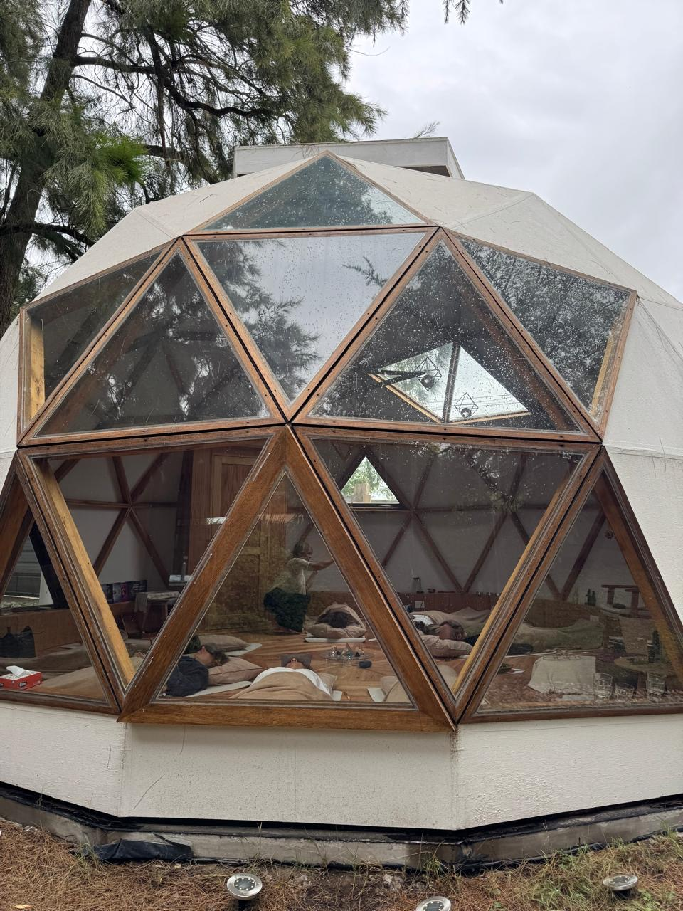

UNA EXPERIENCIA DE ESCUCHA PROFUNDA
✨ 20 de Junio | 18:30 HS | Escobar ✨
RESERVAR MI LUGARLa Meditación Sonora con Sitares es una invitación a entrar en un estado de calma, presencia y contemplación a través de la vibración de dos sitares.
El sitar genera una vibración envolvente que actúa directamente sobre el sistema nervioso, favoreciendo la relajación profunda y la atención plena mediante el lenguaje milenario del Raga.
Músicos dedicados al estudio de la música clásica de India. A través de la improvisación lenta, crean un paisaje sonoro orgánico que invita a la introspección.
@alan.sitar | @nat.bhairav
Realizaremos la actividad dentro de un domo geodésico diseñado para concentrar energía taquiónica cósmica.

Un campo energético que favorece la recalibración y elevación de la consciencia, combinando arquitectura sagrada y naturaleza.